Methodology
|
Timeframe
We split NoteHub up into multiple stages, and scheduled them in a most sensible way in order to make development as efficient as we could.
Accounts SystemIn this stage, we built up a basic accounts system to handle user authentication. |
|
|  |
NoteHub Core CodeDuring this stage, we built up NoteHub's core features - the editor, gallery and note browsing, to name a few. |
DesignAt this stage, we began to make NoteHub look pretty and more appealing to users, by redesigning our editor, website and galleries. |
|
Algorithms and BackendAfter the design stage, we began piecing together the many algorithms and functions that NoteHub's backend would need - ranging from those for the gallery to those for recommending notes, and the all-important credibility one. |
|
TestingFinally, we released NoteHub to testing, fixing bugs reported by users and acting on their suggestions, to produce an even better product. |
Languages / Framworks Used
We used various programming languages and frameworks in the development of NoteHub, all for different purposes and components. |
HTML5Used for building the interface of NoteHub |
 |
CSS3Used for making the interface appealing and easy to use |
JavaScriptUsed to make the interface work |
|
 |
W3.CSS (Library)Used to speed up development of interface |
CKEditorUsed for the note editor |
|
PHPUsed to construct backend and handle server-side functions such as note storage |